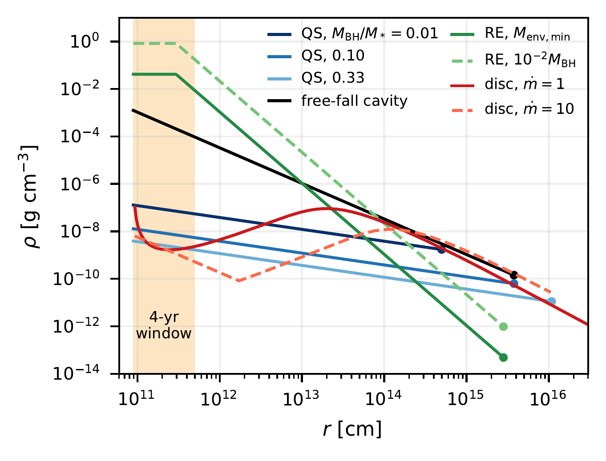
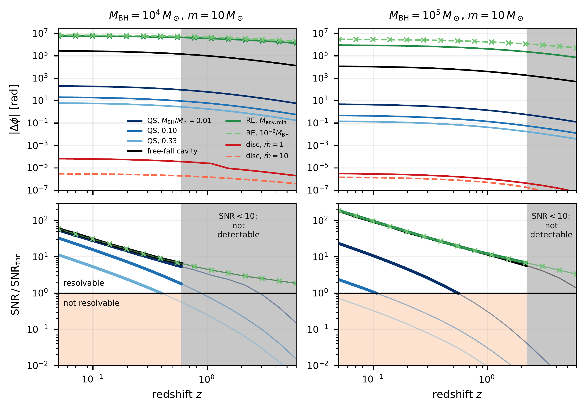
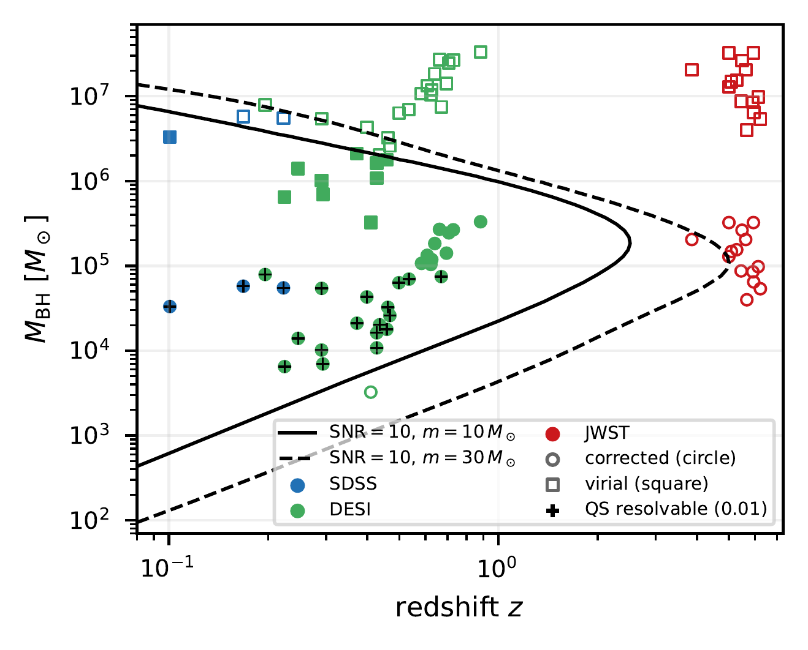

Paper overview
The Little Red Dots discovered by JWST appear to host accreting black holes buried in very dense gas, but the structure of that gas is still an open question. Competing models predict densities that differ by many orders of magnitude close to the black hole, precisely where a stellar-mass compact object spends the last years of an extreme-mass-ratio inspiral. This Letter asks whether LISA could use such an inspiral to tell these interiors apart.
JWST has revealed a population of compact, red sources with broad Balmer lines at $z\sim4$–$9$, known as the Little Red Dots (LRDs). Their spectra combine a blue UV continuum with a red optical continuum, show little hot dust and weak X-ray emission, and often display strong Balmer breaks and absorption features that require very dense gas near the nucleus. Analogous sources have now been identified down to $z\simeq0.1$.
Most interpretations invoke an accreting black hole, but its mass is uncertain. If the broad lines are virialized, the inferred masses are $M_{\rm BH}\sim10^6$–$10^8\,M_\odot$. If instead the line widths come from electron scattering in a dense cocoon, the masses are roughly $100$ times lower. The models proposed for the surrounding gas are designed to reproduce similar spectra, yet they predict densities that differ enormously at $r\sim10^{10}$–$10^{13}\,{\rm cm}$.
These are exactly the radii probed during the final years of an extreme-mass-ratio inspiral (EMRI) of a stellar-mass object into a $10^4$–$10^6\,M_\odot$ black hole, which is a primary LISA source. Gas around the black hole modifies the inspiral, and the accumulated phase shift can be measurable.
The paper considers three proposed models for the central environment of an LRD, together with a Bondi-like free-fall solution as a dense reference case. In a quasi-star, the black hole grows inside a massive, radiation-supported envelope of mass $M_*$. Requiring saturated convection to carry the Eddington luminosity of the envelope gives a universal interior profile,
with convective efficiency $\eta=0.1$. The fiducial stage is $M_{\rm BH}/M_*=0.1$, bracketed by a gas-rich early stage ($0.01$) and a gas-poor late stage ($0.33$).
In a radiative envelope, an Eddington-limited black hole sits inside an envelope much lighter than itself, and the luminosity diffuses outward radiatively,
The free-fall cavity, $\rho_{\rm B}=\rho_i\,(r/R_i)^{-3/2}$, is $10^4$–$10^5$ times denser than the quasi-star near the innermost stable circular orbit. Finally, a super-Eddington disc is modelled as an $\alpha$-disc with accretion rates $\dot m=1$ and $10$ in Eddington units, with a slim inner zone where the disc becomes geometrically thick.

The companion, of mass $m=10$ or $30\,M_\odot$, follows a circular orbit in the potential of the black hole and the enclosed gas. Besides gravitational-wave emission, the inspiral is driven by gaseous dynamical friction, Bondi–Hoyle–Lyttleton accretion onto the companion and the gravitational pull of the enclosed gas mass. For the co-rotating disc, only the enclosed mass is retained, since there is no relative motion between the companion and the gas.
Two inspirals of the same system are integrated, one including the environment and one in vacuum, over the last $T_{\rm obs}=4\,{\rm yr}$ of observation. Aligning them at the ISCO, the accumulated gravitational-wave dephasing is
A dephasing of $\sim0.1\,{\rm rad}$ is often quoted as the threshold for a measurable effect. However, part of a smooth environmental phase can be absorbed into the coalescence time and phase of a vacuum template. The paper therefore computes the mismatch $\mathcal{M}$ between the environment-dressed and vacuum waveforms, after maximising over $t_c$ and $\phi_c$, and requires
An interior is counted as resolvable when the event is detectable (${\rm SNR}>10$), satisfies this criterion and remains perturbative, meaning that the gas does not dominate the inspiral. For a $10\,M_\odot$ companion, the detection horizon reaches $z\simeq2.2$ at $M_{\rm BH}=10^5\,M_\odot$; a $30\,M_\odot$ companion extends it to $z\simeq5$.
The answer depends strongly on the density of the interior. The dense models, the free-fall cavity and the radiative envelope, dephase by $\Delta\phi\sim10^2$–$10^6\,{\rm rad}$ whenever they remain perturbative. The environment-dressed and vacuum waveforms are then completely different, the mismatch approaches unity and ${\rm SNR}_{\rm thr}\simeq1.5$: these interiors are resolvable in every detectable event.
Quasi-stars are more subtle. Nearby, the dephasing ranges from $\simeq0.15\,{\rm rad}$ to $\simeq200\,{\rm rad}$ depending on the black-hole mass and the evolutionary stage, but the mismatch criterion demands a much higher SNR than the simple $0.1\,{\rm rad}$ rule. Their imprint is resolvable only for $M_{\rm BH}\lesssim10^5\,M_\odot$ and $z\lesssim0.6$, and is favoured by lighter hosts and earlier, gas-richer stages.
The disc behaves very differently. Because its gas co-rotates with the companion, there is no dynamical friction or accretion drag, and a thin disc holds very little mass inside the orbit. The dephasing is only $\Delta\phi\sim10^{-7}$–$10^{-5}\,{\rm rad}$, so the disc leaves no resolvable imprint through its enclosed mass.

The same criterion can be applied to two environment-dressed waveforms. The free-fall cavity and the radiative envelope can be distinguished from every other model wherever they are detectable and perturbative, while different quasi-star stages can be told apart only for nearby sources.
The calculation is then applied to two spectroscopic samples: 14 JWST LRDs at $z=3.9$–$6.2$ and 31 confirmed LRDs at $z=0.10$–$0.88$ from SDSS, DESI and other surveys. Each object is evaluated both at its virial mass and at the scattering-corrected mass $M_{\rm vir}/100$.
With a $10\,M_\odot$ companion, none of the JWST objects is detectable. The local sample is far more promising: at the corrected masses, 30 of the 31 objects lie within the LISA horizon, with ${\rm SNR}=13$–$85$. A free-fall cavity would be resolvable in all 30, and a quasi-star interior in 5–20 of them, depending on the stage.

The main limitation is the event rate. For a per-nucleus rate $\Gamma$, the expected number of events in a mission of duration $T_{\rm obs}$ is
where $\chi$ selects detectable or resolvable events. Adopting the EMRI rate of ordinary galactic nuclei, $\Gamma=10^{-7}$–$10^{-6}\,{\rm yr^{-1}}$, a four-year LISA mission would yield $0.08$–$0.8$ detectable events for $10^5\,M_\odot$ hosts with $10\,M_\odot$ companions, and $1.5$–$15$ with $30\,M_\odot$ companions. Every one of them would resolve a free-fall cavity. A quasi-star imprint is much rarer, since it requires light hosts at low redshift, where LRDs are scarce. If instead LRD nuclei are dense star clusters, where captures are mostly direct plunges, the number of multi-year inspirals drops to $\lesssim10^{-4}$.
A single such event would be valuable well beyond these models. The waveform alone measures the redshifted masses, the black-hole spin, the luminosity distance and an approximate sky position, and, if the gas imprint is resolvable, the gas density and its slope within a few tens of Schwarzschild radii. Identifying the host galaxy would provide the source-frame mass, directly testing whether the broad lines are virial or broadened by electron scattering. Combined with the dense gas inferred from Balmer absorption further out, it would constrain the gas distribution over several orders of magnitude in radius, a region inaccessible to either messenger alone.
The paper shows that gravitational-wave dephasing can discriminate between the proposed interiors of the Little Red Dots:
Free-fall cavities and radiative envelopes would be resolvable in any detected, perturbative event; convective quasi-stars only for light, nearby hosts; and a co-rotating disc not at all. The limiting factor is not sensitivity but the rate of multi-year inspirals in LRD nuclei. If LRDs host such inspirals at ordinary galactic-nucleus rates, LISA has the potential to probe their interiors, preferably with companions of a few tens of solar masses.